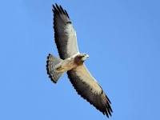

William John Swainson FLS, FRS (8 October 1789 – 6 December 1855), was an English ornithologist, malacologist, conchologist, entomologist and artist.
Swainson was born in Dover Place, St Mary Newington, London, the eldest son of John Timothy Swainson the Second (1756-1824), an original fellow of the Linnean Society. He was cousin of the amateur botanist Isaac Swainson. His father's family originated in Lancashire, and both grandfather and father held high posts in Her Majesty's Customs, the father becoming Collector at Liverpool.
William, whose formal education was curtailed because of an impediment in his speech, joined the Liverpool Customs as a junior clerk at the age of 14. He joined the Army Commissariat and toured Malta and Sicily He studied the ichthyology of western Sicily and in 1815, was forced by ill health to return to England where he subsequently retired on half pay. William followed in his father's footsteps to become a fellow of the Linnean Society in 1815.
In 1806 he accompanied the English explorer Henry Koster to Brazil. Koster had lived in Brazil for some years and had become famous for his book Travels in Brazil (1816). There he met Dr Grigori Ivanovitch Langsdorff, also an explorer of Brazil, and Russian Consul General. They did not spend a long time on shore because of a revolution, but Swainson returned to England in 1818 in his words "a bee loaded with honey", with a collection of over 20,000 insects, 1,200 species of plants, drawings of 120 species of fish, and about 760 bird skins.
As with many Victorian scientists, Swainson was also a member of many learned societies, including the Wernerian Society of Edinburgh. He was elected a fellow of the Royal Society after his return from Brazil on 14 December 1820, and married his first wife Mary Parkes in 1823, with whom he had four sons (William John, George Frederick, Henry Gabriel and Edwin Newcombe) and a daughter (Mary Frederica). His wife Mary died in 1835.
Swainson remarried in 1840 to Ann Grasby, and emigrated to New Zealand in 1841. Their daughter, Edith Stanway Swainson, married Arthur Halcombe in 1863. Swainson was involved in property management and natural history-related publications from 1841 to 1855, and forestry-related investigations in Tasmania, New South Wales, and Victoria from 1851 to 1853. Swainson died at Fern Grove, Lower Hutt, New Zealand, on 6 December 1855.
---Swainson's hawk, is a large Buteo hawk of the Falconiformes, sometimes separated in the Accipitriformes like its relatives. This species was named after William Swainson, a British naturalist
Swainson was at times quite critical of the works of others and, later in life, others in turn became quite critical of him.
Apart from the common and scientific names of many species, it is for the quality of his illustrations that he is best remembered. His friend William Elford Leach, head of zoology at the British Museum, encouraged him to experiment with lithography for his book Zoological Illustrations (1820–23). Swainson became the first illustrator and naturalist to use lithography, which was a relatively cheap means of reproduction and did not require an engraver. He began publishing many illustrated works, mostly serially. Subscribers received and paid for fascicles, small sections of the books, as they came out, so that the cash flow was constant and could be reinvested in the preparation of subsequent parts. As book orders arrived, the monochrome lithographs were hand -coloured, according to colour reference images, known as ‘pattern plates’, which were produced by Swainson himself. It was his early adoption of this new technology and his natural skill of illustration that in large part led to his fame.
When in March 1822 Leach was forced to resign from the British Museum due to ill health, Swainson applied to replace him, but the post was given to John George Children. Soon after his first marriage in 1823, Swainson visited Paris and formed friendships with Georges Cuvier, Étienne Geoffroy Saint-Hilaire, and other eminent French naturalists. Upon his return to London, he was employed by Messrs. Longman as editor for the natural history departments of Lardner's Cabinet Cyclopedia. Swainson continued with his writing, the most influential of which was the second volume of Fauna Boreali-Americana (1831), which he wrote with John Richardson. This series (1829–1837) was the first illustrated zoological study to be funded in part by the British government. He also produced a second series of Zoological Illustrations (1832–33), three volumes of William Jardine's Naturalist's Library, and eleven volumes of Lardner's Cabinet Cyclopedia; he had signed a contract with the London publishers Longman to produce fourteen illustrated volumes of 300 pages in this series , one to be produced quarterly.